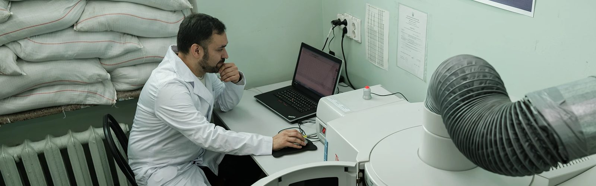
Scientific-Technological Complex "Institute of Single Crystals": Growing and Preserving
01.05.24
Compared to other scientific institutions in Kharkiv, the Scientific-Technological Complex "Institute of Single Crystals" was established relatively recently, in 1955. For the rapid development of nuclear technology, the Soviet authorities urgently needed new radiation-sensitive and radiation-resistant materials, ionizing radiation detectors, and structural materials.
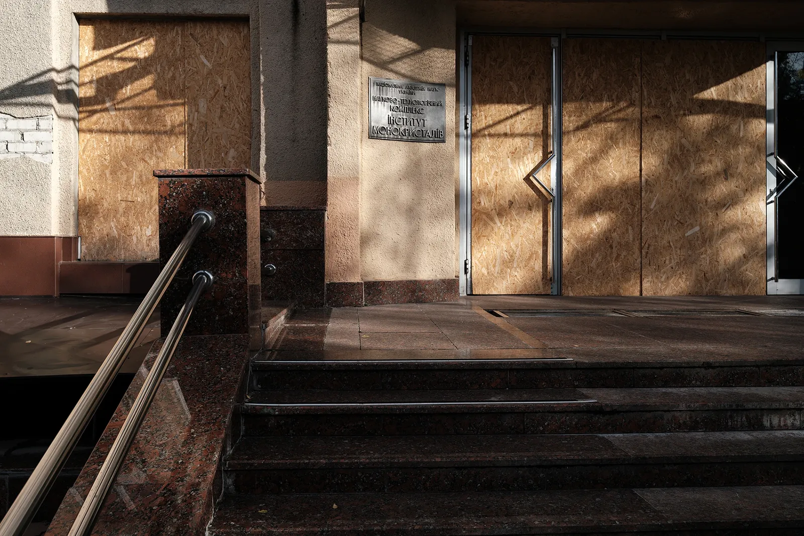
After Ukraine gained independence, the Complex began to actively collaborate with the real sector of the economy: the pharmaceutical industry, nuclear and processing industries, and medicine.
Based on Kharkiv's single crystals, gamma detectors for Siemens Medical, Philips, and General Electrics Healthcare tomographs are created. It is the only one in the world that grows crystals weighing 500 kilograms for such equipment.
In the mid-2000s, the complex, in collaboration with other domestic enterprises, supplied more than 30 of its own produced tomographs to Ukrainian medical institutions as part of the Ukrainian Ministry of Health's program.
It is the only complex in the world that grows zinc selenide crystals for Ukrainian and international security systems at airports and customs.
The complex also includes a Chemical Reagents Plant, the only state manufacturer of active pharmaceutical ingredients. It produces a third of all domestic pharmaceutical substances, which are the basis for hundreds of preparations of Ukrainian pharmaceutical companies. Additionally, the complex develops pharmaceuticals for pharmaceutical companies, from selecting the optimal composition to manufacturing experimental batches for preclinical trials, helping with packaging and dosage forms (such as inhaler forms) and registration documents.
Internationally, the complex is known primarily for its detectors for the largest experiments in the field of high-energy physics, particularly those of the Large Hadron Collider.
"For conducting scientific research and development at a global level, we require modern scientific equipment, which is very sensitive to operating conditions. For instance, we have the only nuclear magnetic resonance spectrometer in the country, certified for confirming the structure of active pharmaceutical ingredients. The core of this spectrometer is a super magnet, which has superconducting properties at the temperature of liquid helium (-272°C). In winter 2022, before the invasion, we managed to update the helium (we do this once a year), and liquid nitrogen, which is also necessary for cooling (required every three months), we requested when Kharkiv was being shelled, from the Institute of Cryobiology and Cryomedicine. Donors helped them, and they shared some with us: about 70 liters. Without helium and nitrogen, the magnet would instantly heat up and lose its superconducting properties, and then it would be cheaper to buy a new spectrometer rather than restart the old one, so it was critical to keep the installation running," says Candidate of Sciences, Institute Secretary Ilias Shcherbakov.
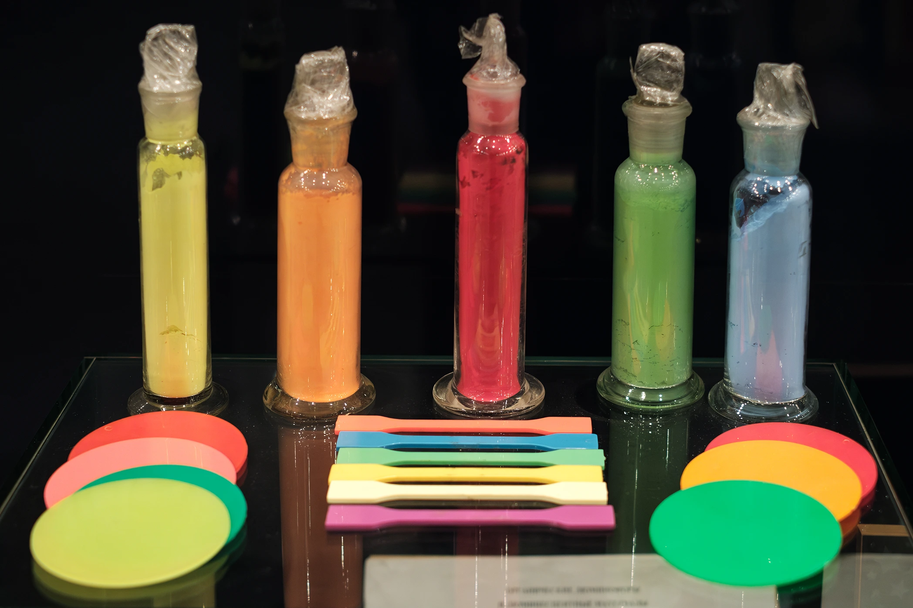
Tension
The problem of blackouts and power outages in 2022 was the most challenging for the Institute. Due to the voltage drop on February 24, all the crystals that had been growing for a long time had to be discarded (depending on the type of crystals, this process can take from two weeks to nine months). Inorganic single crystals grow continuously at temperatures up to 2300 degrees, so even a small voltage fluctuation can create defects in their structure.
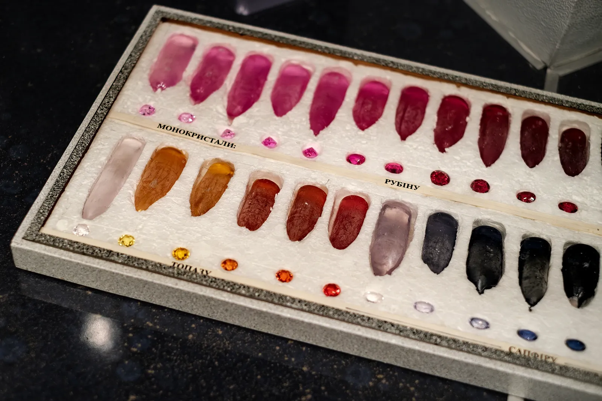
On the first day of the invasion, the Complex's work resembled an emergency stop at a power plant. Employees were sent home, and only the management and heads of departments remained on site. They shut down and preserved the equipment, waited for the furnaces to cool down, and removed the crystals from them.
Later, employees started coming here as the safest place for themselves, as the main building has a reliable bomb shelter. About 200 employees lived underground on cots with a makeshift kitchen.
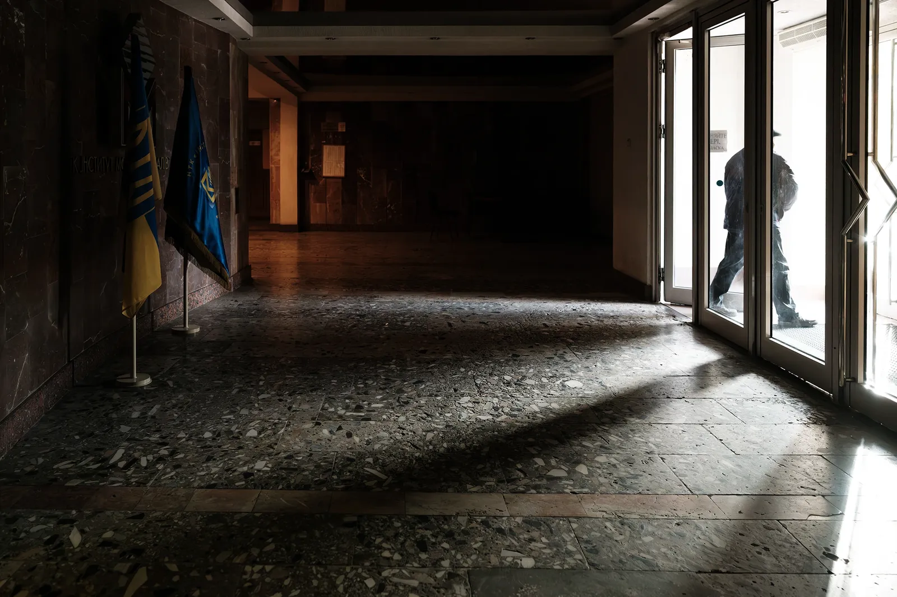
To ensure the equipment's uninterrupted power sources, a donation drive was opened among foreign colleagues in October 2022, raising over one million hryvnias. All the equipment was purchased by March 2023.
"We waited months for the power sources. We had already paid one supplier for them under a contract, but someone beat us to it and bought the equipment for cash," comments Ilias.
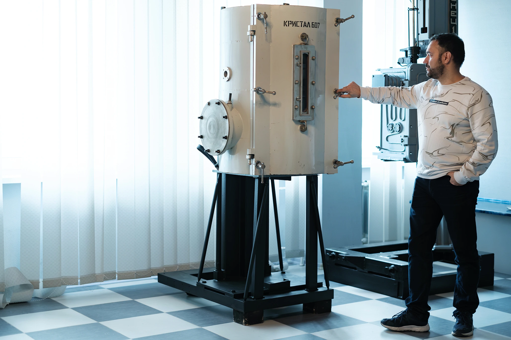
Generators allow the institution to maintain power for a few hours, giving enough time to shut down the equipment in a normal manner. Evacuating the installations and production lines is impossible: it's too expensive, and it's hard to find new premises with the necessary requirements for electricity and water supply.
In addition to financial help for generators, foreign colleagues also helped temporarily employ employees of the Complex — about a third of the staff left for different countries, though some are now returning home.
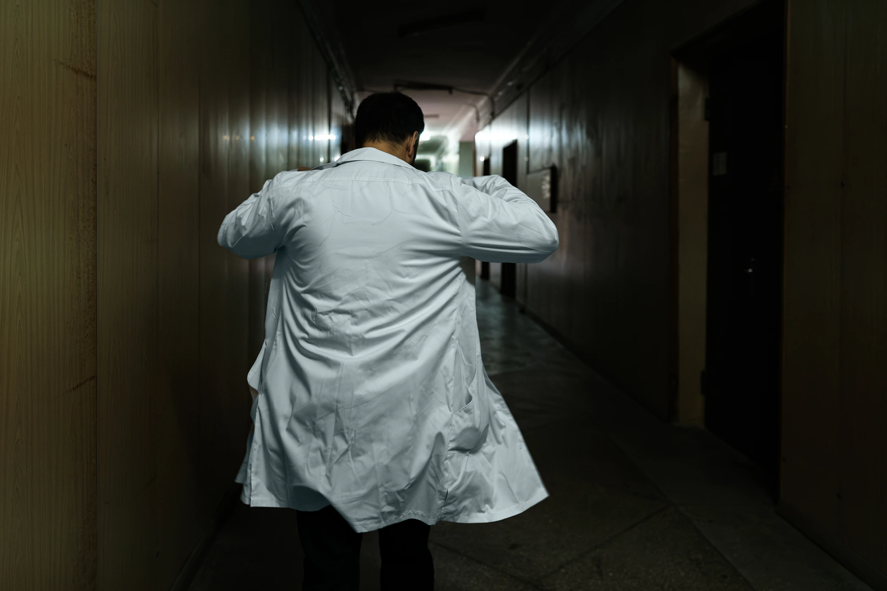
"We don't make a tragedy out of scientists' mobility. Even before the invasion, 10–15 of our scientists went abroad for training each year and then returned. Of course, now there is an imbalance with unclear consequences, but on the other hand, we now have a strong scientific diaspora in Canada, the USA, the UK, and France. We have established international connections," shares Ilias.
Development
The Complex, like the whole city, suffered from shelling. At the Chemical Reagents Plant, the roof was damaged by an airstrike on March 5, and windows were shattered. Medicinal substances and reagents in the premises froze.
The institution restored new frames and glass at its own expense and with funds from the National Academy of Sciences, spending $10,000. They also restored the technological equipment of the Chemical Reagents Plant at their own expense, which resumed operations in June 2022.
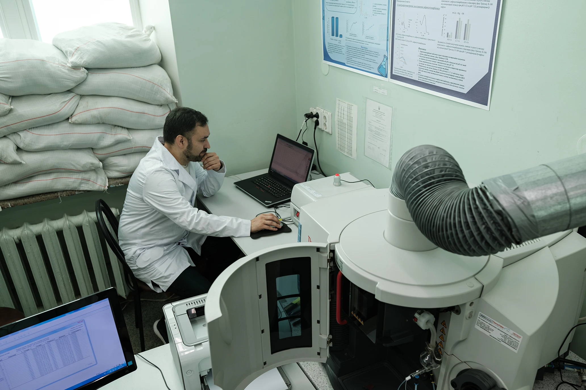
"Unlike a classic scientific institution, we try not to stay in the stage of scientific reporting but implement developments. Crystals become medical and security equipment. Chemical substances become medicinal products. If we work with real sectors of the economy, we also have more funds that we can reinvest in updating the material and technical base," explains Ilias.
Expanding collaboration with pharmaceutical companies is seen as an important direction for their work. Due to issues with importing drugs from abroad, Ukrainian manufacturers are forced to and are already starting to expand their own capacities.
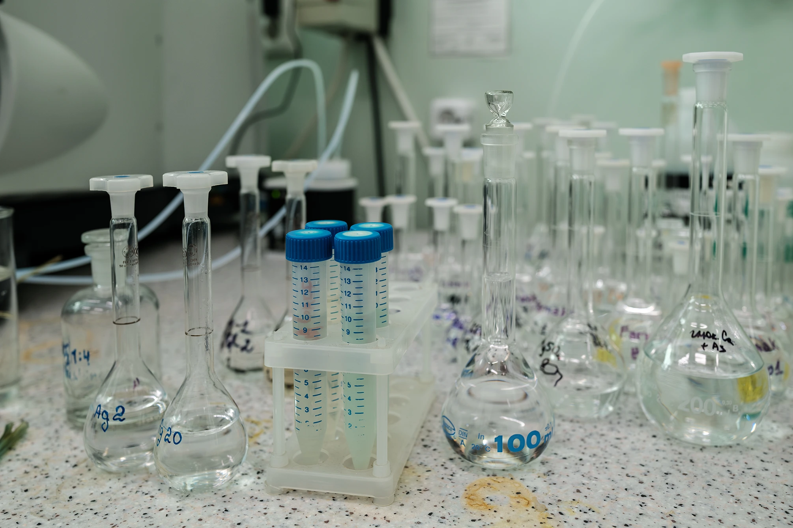
Other sectors of the economy are also invited to collaborate. Ilias explains that due to the military actions, the Institute is increasingly approached in the context of the safety of power plants, but dialogue with new sectors of the economy is still difficult: "In 2008–2014, we talked with DTEK, Ukrtelecom; they were surprised: 'Oh, you have scientific research.' Maybe they had an experience where they were not helped, and now this cliché extends to other scientific institutions. However, our experience shows that when businesses transition from resource exploitation to development, they realize the need to invest in technology."
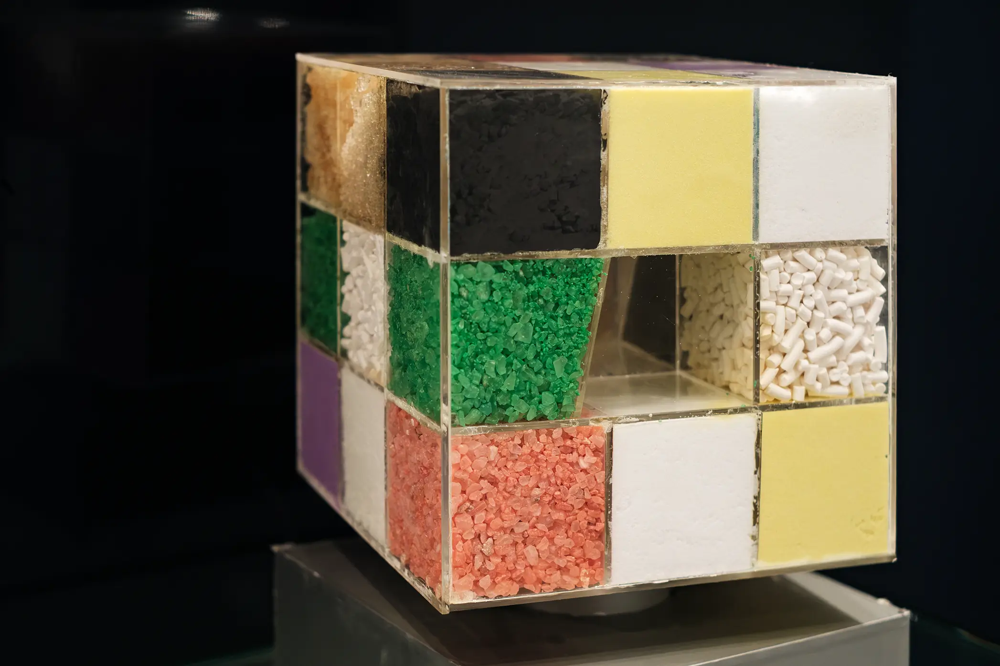
For 2024, the Complex already has an order plan and wants to update equipment. Production capacity is now at 70% compared to 2021. Among everyday challenges, they mention problems with purchasing chemical reagents and the fact that service engineers for rare scientific and industrial equipment are afraid to come to Kharkiv. Often, they have to repair or set up equipment over Zoom — even engineers from Kyiv or Lviv don't always come.
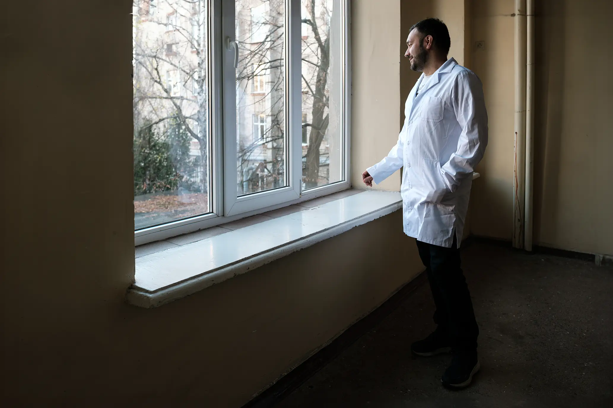
Regarding chemical reagents, Ilias comments: "With the occupation of parts of the Donetsk and Luhansk regions, we lost all the coke and chemical industry, including the Lysychansk and Avdiivka Coke Chemical Plants, as well as many domestic 'big chemistry' enterprises. In western Ukraine, there are other productions, but they are cut off from the raw material base. We are forced to buy all reagents in Germany, France, and each time we have to explain that they are not for military needs but scientific."
Despite these obstacles, the "Institute of Single Crystals" maintains optimism and plans to renew rather than rebuild in 2024. Rock music plays in the laboratories, and the entrance doors open every minute, letting in new people.
Supported by Alfred P. Sloan Foundation and facilitated by IIE.